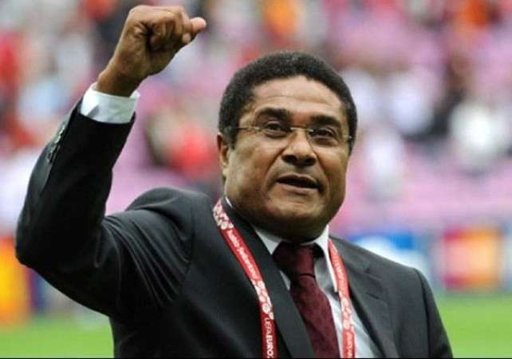
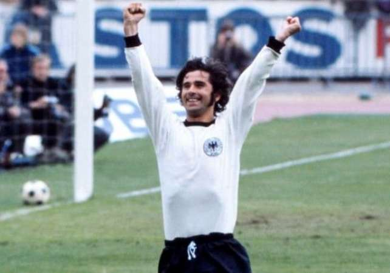
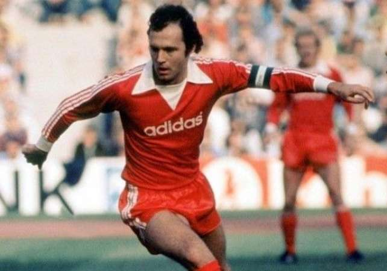
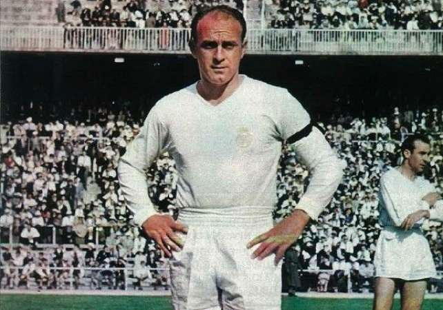
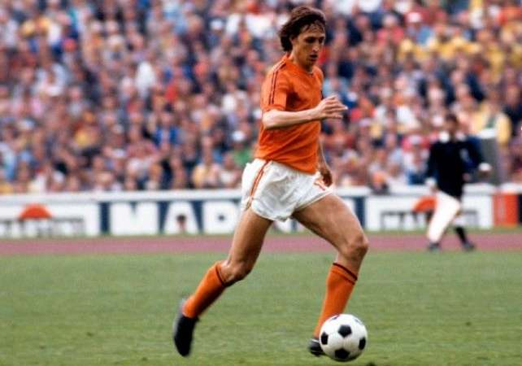
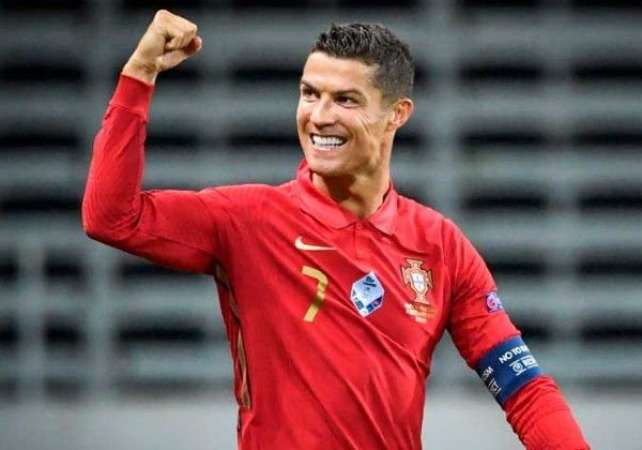
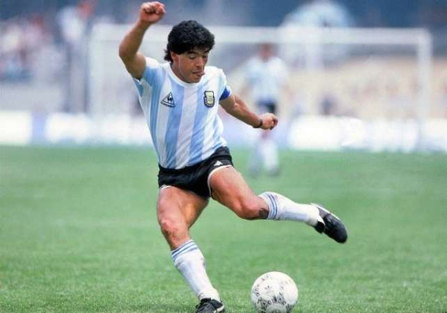
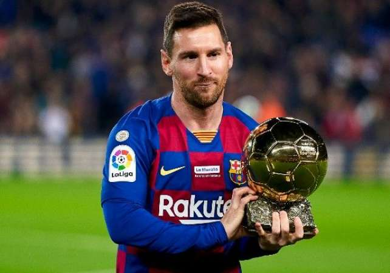
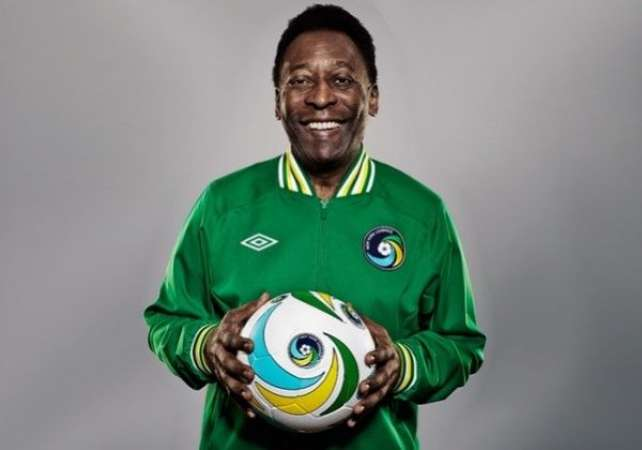

Номер 10
Ейсебіо

Він народився 25 січня 1942 року і є відставним португальським
футболістом. Шанувальники досі вважають його одним із найкращих
футболістів усіх часів. Він забив 53 голи у клубних турнірах УЄФА,
що є дев'ятим рекордом за всю історію.
Номер 9
Герд Мюллер

Герд Мюллер займає дев'яте місце у списку найкращих міжнародних
бомбардирів за весь час, незважаючи на менш важливі ігри, ніж інші у
списку. Шанувальники прозвали його «Бомбардувальником нації» через
його неймовірні здібності до результату. Мюллер виграв титул
європейського футболіста року у 9 році. Він отримав «Золоту бутсу»,
забивши 1970 голів на чемпіонаті світу з футболу 10 років у Західній
Німеччині.
Номер 8
Франц Беккенбауер

Шанувальники часто називають Беккенбауера одним з найбільших
футболістів всіх часів виробництва Німеччина. Він народився 11
вересня 1945 року. Раніше він був тренером німецької команди, а
також добре відомий як менеджер та колишній гравець.
Номер 7
Альфредо Ді Стефано

Ді Стефано народився в Аргентині в сім'ї італійських іммігрантів,
але грає на міжнародному рівні за три різні команди, тому навряд чи
зможе зрівнятися з успіхом у п'яти фінальних матчах Кубка чемпіонів
поспіль. Кар'єра Ді Стефано була нічим іншим, як космополітичною.
Номер 6
Йохан Кройфф

Франкський голландець відзначився за «Аякс» та «Барселону» у 1960-х
та 1970-х роках, і багато експертів вважають його європейцем.
найкращий гравець усіх часів. У 100 році Пеле також включив його до
списку 2004 найбільших гравців світу ФІФА. У 20 році він був
включений до збірної світу з футболу 1998-го століття, а у 2002 році
– до команди мрії чемпіонату світу з футболу.
Номер 5
Зинедин Зидан
Зінедін Зідан, що народився 23 червня 1972 року, досі вважається
одним з найбільших футболістів і одного з найбільших мусульманських
спортсменів. Легендарний футболіст, який вийшов на пенсію, раніше
грав у команді Франції на позиції півзахисника. Він також отримав
корону найкращого європейського футболіста всіх часів. За свою
кар'єру він тричі ставав найкращим гравцем року за версією ФІФА.
Крім того, він також одного разу виграв Золотий м'яч.
Номер 4
Криштиану Роналду

Один з найбільших футболістів Криштіану Роналду нині грає в Серії А
за «Ювентус». Крім того, він є капітаном збірної Португалії. Він
народився 5 лютого 1985 року. Він був найдорожчим футболістом 2009
року, коли перейшов з Манчестер Юнайтед до Реалу Мадрид. Але у 2013
році Гарет Бейл побив рекорд, перейшовши до «Реалу Мадриду» за 100
мільйонів євро.
Номер 3
Дієго Марадона

Один з найбільших футболістів Дієго Марадона, якого завжди вважали
найбільший аргентинський футболіст. Він єдиний, хто двічі встановив
рекорд вартості трансферу. Марадона за своє життя зіграла та виграла
на багатьох турнірах. Він народився 30 жовтня 1960 року. Помер князь
футболу 25 листопада 2020 року.
Номер 2
Ліонель Мессі

Ліонель Мессі народився 24 червня 1987 року. В даний час він грає за
клуб Ла Ліги "Барселона" як нападник. і він найкращий бомбардир Ла
Ліги. Крім того, він також є капітаном збірної Аргентини. Світові та
футбольні експерти вважають його одним з найкращих футболістів усіх
часів в історії гри, а також став найкращим результативним гравцем у
чотирьох кампаніях поспіль у Лізі чемпіонів.
Номер 1
Пеле

Бразильский футболист на пенсии Пеле по-прежнему считается одним из
величайшие футболисты всех времен. Родившийся 21 октября 1940 года,
Пеле до сих пор считается многими футбольными экспертами лучшим
игроком. величайший футболист всех времен родился на планете Земля.
В период своего расцвета он также стал самым высокооплачиваемым
футболистом.